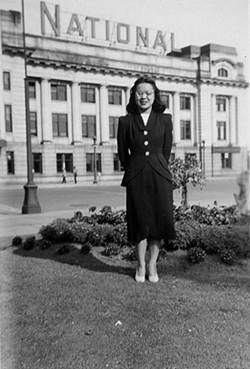
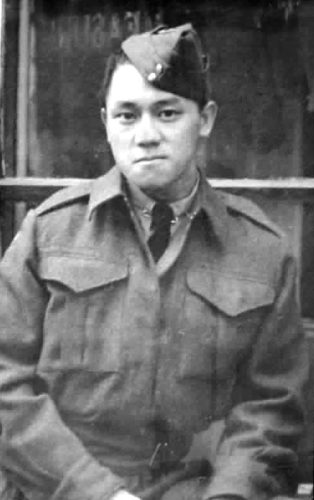

Margaret Gee is a Chinese-Canadian lawyer, she lived from December 10, 1927, to July 17, 1995. Margaret parents owned a bookstore in Vancouver's Chinatown, where they grew up. She grew up in Vancouver's Chinatown, during the period of the Chinese Exclusion Act. This period saw a large-scale of anti-chinese racism, espiecally in British Columbia. People of Chinese decent were denied many rigths, and they were barred from certain professions, such as lawyers.
In 1947 the Chinese Exculsion Act was repealed. Three years after the law has been lifted, Margaret Gee enrolled in law school at UBC. She went on to become the first woman of Chinese descent to graduate lawschool at UBC, and the first Chinese-Canadian woman to become a lawyer. In 1955, Margaret Gee opened her own law office, from there she became the first Chinese-Canadaian woman to practice law in British Columbia. It's safe to say Margaret Gee is a pioneer as a female and Chinese-Canadaian lawyer. In 1981, Magaret Gee retired from her legal practise.
Margaret and her partner, Robert Lee, are both veterans, although neither of them fought in the war. Robert Lee was part of the Force 136, and Margaret Gee was a pilot for the Royal Canadian Air Force Reserves. The two never offically married, nor had kids, but they were a fashionable couple; dressed in the best and latest styles, smoking cigarettes in elegant holders. The couple stayed together for the rest of their lifes.